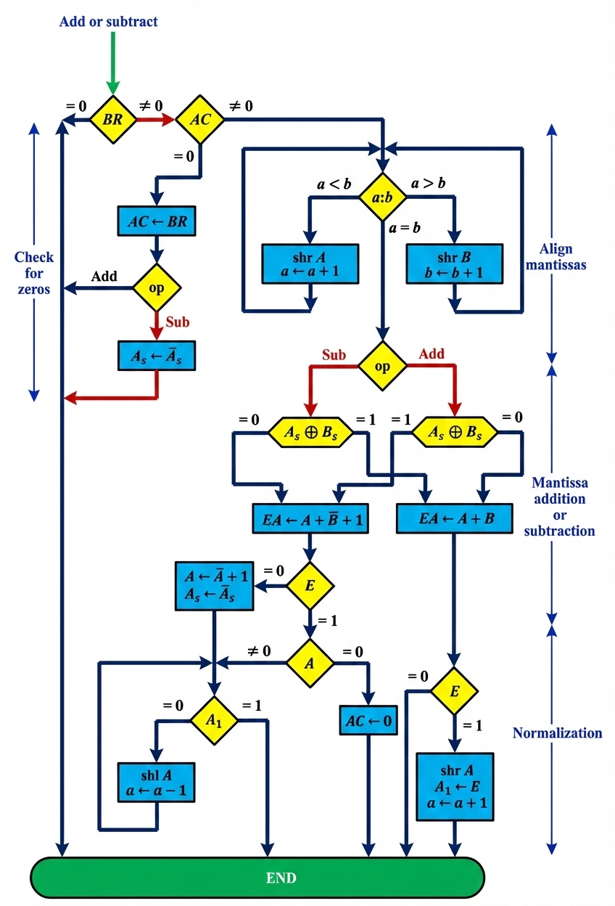

📋 Overview
During floating-point addition or subtraction, two operands are stored in registers AC and BR. The sum or difference is formed in AC. The algorithm processes data through four consecutive phases:
🔍
Check for Zeros
Verify if operands are zero
⚖️
Align Mantissas
Equalize exponents
➕
Add/Subtract
Perform arithmetic
🎯
Normalize
Standardize result
🔄 Algorithm Steps
1
Check for Zeros
Verify if either operand is zero. A zero floating-point number cannot be normalized and requires special handling during computation.
2
Align the Mantissas
Before arithmetic operations, mantissas must be aligned. If the exponents are different, we shift the mantissa of the number with the smaller exponent and adjust its exponent until both exponents become equal before performing addition or subtraction.
3
Add or Subtract the Mantissas
After alignment, the mantissas are added or subtracted. The result may be unnormalized, requiring the normalization procedure.
4
Normalize the Result
The normalization process ensures that the leftmost bit of the mantissa is 1. This may involve shifting the mantissa and adjusting the exponent accordingly.
📊 Algorithm Flowchart
Floating-Point Addition and Subtraction Algorithm

💡 Key Concepts
🎯 Exponent Alignment
Before arithmetic operations, exponents must be equal. The mantissa with the smaller exponent is shifted right, and its exponent is incremented until both exponents match.
⚠️ Zero Handling
Zero values require special treatment as they cannot be normalized. The algorithm checks for zeros at the beginning and terminates the process if necessary.
🔧 Normalization
After arithmetic operations, the result must be normalized so the leftmost bit of the mantissa is 1. This involves shifting and adjusting the exponent accordingly.
🔍 Detailed Process
Mantissa Alignment Phase
The magnitude comparator examines exponents a and b, providing three outputs indicating their relative magnitude. If exponents are unequal, the mantissa with the smaller exponent is shifted right, and the exponent is incremented. This repeats until both exponents are equal.
Important: The alignment of mantissas depends on the relative magnitudes and signs of the two mantissas. If the magnitudes were subtracted and the result is zero or has an underflow, the entire floating-point result in AC is made zero.
Normalization Phase
The mantissa must have at least one bit set to 1 and an overflow bit that is 0. If this condition is met, the mantissa is shifted left and the exponent decremented. The leftmost bit (A₁) is checked repeatedly until it equals 0, indicating proper normalization.
Critical Note: During overflow in addition, the sum is transferred into flip-flop E, all bits of A are shifted right, and the exponent is incremented to compensate. No underflow can occur because the original mantissa wasn't shifted during alignment.
📌 Special Considerations
⚡
Overflow Handling
When magnitudes are added and overflow occurs(E = 1), all bits of mantissa are shifted right. The exponent must be incremented to compensate for this shift.
🔄
Result Sign Management
The magnitude of result depends on relative magnitudes and signs of the two mantissas. Special handling ensures the correct sign is maintained throughout operations.
✓
Termination Conditions
The operation terminates when AC = 0, with the value in BR being transferred to AC. Proper checks ensure algorithm completes correctly for all input combinations.